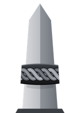

Ysterklip builds market-positioning data and volatility models for traders who run their own systems. We watch gold, US indices, crude, FX and the major crypto pairs together, because none of them moves alone.
Live order-book depth, open interest, long/short ratios, funding, volume by side, liquidations and large trades, from multiple venues, with a world economic calendar on the chart. Positioning data the way crypto traders have had it for years, for gold, US indices, crude and FX as well as the crypto majors.
Runs our own desk today. A customer edition is planned.
Forecasts next-session volatility and expected range per instrument, trained on tick-level history. First outputs will be published with a live track record: every forecast logged against what actually happened, so you can judge it yourself.
How oil, the dollar, rates and carry flows move together; how those regimes feed through to equities and commodities; which instruments are compressed or over-extended relative to the rest. We'll publish each piece as it earns a track record, not before.
Ysterklip provides data and model outputs. It does not give financial advice, manage money or recommend trades.
We're taking a small first group for the volatility feed. Tell us what you trade and how you'd use it.